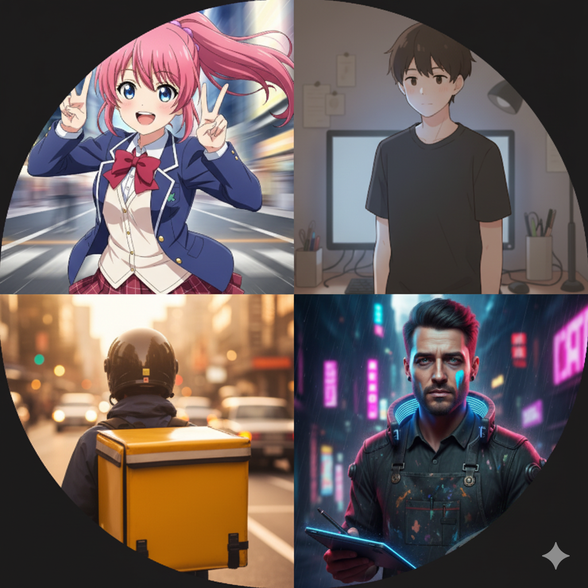

点击任意位置继续
💻 笔记本
🎵 音乐播放器
📌 公告
🖥️ 深空灰
💾 保存剧情
⟲ 读取剧情
↺ 重置剧情
夜班聊天室 · 笔记本
✖

群聊 · 夜班聊天室
4 人在线
📞
📹
打开剩余价值可视化
历史资料
音乐播放器
✖
0:00
0:00
⏮
▶
⏭
播放列表
公告板
✖
使用说明
点击上方“笔记本”打开聊天工具（群聊/私聊）。
“DasKapital（马克思）”会在特定剧情后解锁。
张宇篇中可打开“剩余价值可视化”。
当前目标
操作提示
点击聊天窗口逐条推进对话（一次点击仅出现一条）。
在有选项时，点击选项推进分支。
音乐播放器可随时播放/切歌。
剧情播放速度
慢
中
快
当前：
1000
ms
提示：点击聊天窗口可“快进”当前段落；选项按钮不会触发快进。
…
剩余价值可视化
✖
历史资料
✖
点击任意位置继续
角色档案解锁
✖
—
—
✖